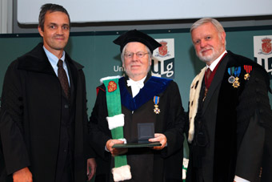
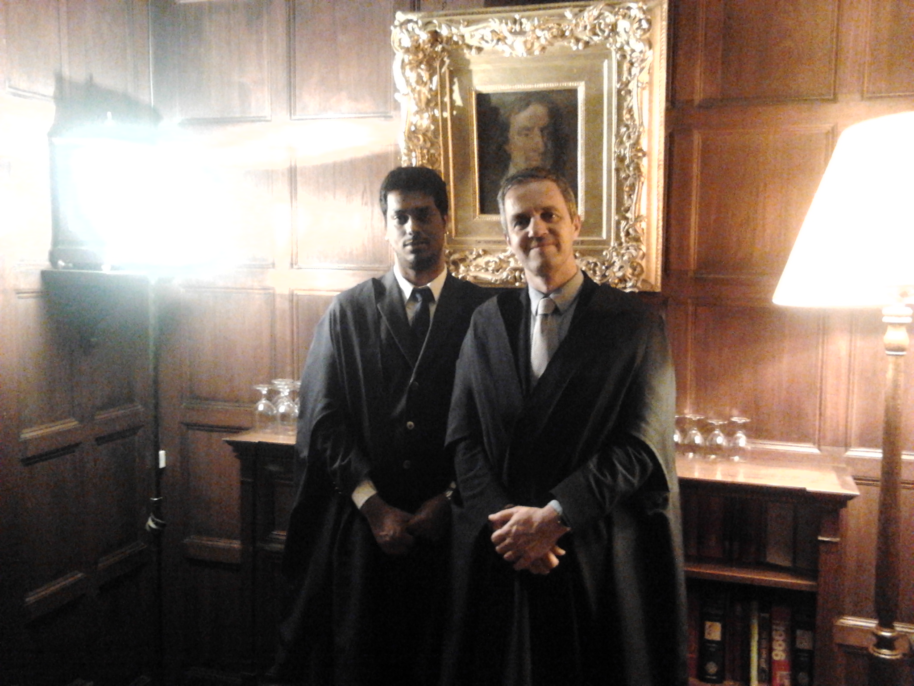

Liber amicorum
Friends, conversations and shared moments

A place for personal recollections: a conversation that stayed with us, a problem worked through together, a journey, a meal, or a moment of music.
From the public archive
The photographs below are documented public archive images. Friends’ personal recollections will be added when contributed.

Liège · 16 October 2010
Rodolphe with Jan Willems and Bernard Rentier at Willems’s honorary doctorate ceremony, University of Liège.
Jan C. Willems archive, KU Leuven ESAT. Photographer not stated. · Source

Sidney Sussex, Cambridge · 2015
Rodolphe and Bamdev Mishra at Sidney Sussex College, Cambridge.
Bamdev Mishra’s public academic photo archive. Photographer not stated. · Source
Friends’ recollections
Contributed memories will appear here with the writer’s name, photographs and captions. This section is awaiting personal contributions.
Preparing a memory
A few paragraphs and one or more photographs are enough. Include your name, the people shown, the place and approximate date, and a photographer credit where known. Please choose material you are happy to have included in the collection.